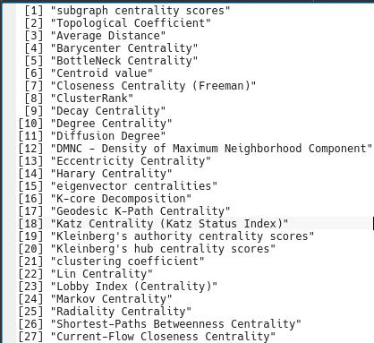

2. Archivos y formatos comunes en Bioinformática¶
2.1. ¿Qué es un archivo de texto?¶
Son documentos de texto plano o sin formato, ya que solmente contienen caracteres de tipo alfanuméricos que carecen de un formato tipográfico.
Un archivo de texto contiene información que puede ser tan simple como letras, palabras y oraciones; o más compleja como un registro de coordenadas de una estructura proteica o los resultados de secuenciación de varias muestras biológicas, en los que la información estará en diferentes columnas divididas por caracteres de separación o delimitadores.
{kind=link}
2.2. Formatos de archivos de texto comunes en Bioinformática¶
Existen muchos archivos de texto que se utilizan en Bioinformática, en este caso veremos algunos de los más comunes.
2.2.1. FASTA¶
Es un archivo de texto plano que contiene información de secuencias de DNA, RNA o proteínas
Puede contener una o más secuencias (multifasta)
Este archivo consiste de:
Una o varias líneas que empiezan con el símbolo “>” y es seguido por un código de identificación de la secuencia.
Una o más líneas que contienen la secuencia, cada línea debe contener menos de 80 caracteres.
Ejemplo de un archivo FASTA de secuencias de proteínas:

Tip
Puedes encontrar más información sobre este tipo de archivo en el siguiente link.
2.2.2. BED¶
Archivo de texto plano tabular
Contiene información de contexto genómico: coordenadas y características asociadas al genoma
Existen varias versiones: BED3, BED6, BED12
Actualmente se usan otros formatos como el GFF
Ejemplo de un archivo BED y su interpretación:

Tip
Puedes encontrar más información sobre este tipo de archivo en el siguiente link.
2.2.3. FASTQ¶
Archivo de texto plano que contiene información relacionada a la secuenciación de nucleótidos con su score de calidad
Este score corresponde a un carácter ASCII e indica qué tan confiable es que la base haya sido secuenciada e identificada correctamente, lo que se conoce como Phred score
El formato consiste en:
Línea 1 inicia con “@” seguido por la identificación de la secuencia
Línea 2 es la secuencia.
Línea 3 contiene el símbolo “+” que indica el término de la secuencia
Línea 4 la codificación para el score de calidad, debe contener el mismo número de símbolos que de letras en la secuencia.
Ejemplo de un archivo Fastq y su interpretación:

Tip
Puedes encontrar más información sobre este tipo de archivo en el siguiente link.
2.2.4. PDB¶
Es un archivo de texto plano que contiene las coordenadas atómicas de los aminoácidos que componen una proteína, ADN, ARN, u otra biomolécula.
Estas coordenadas se obtienen a partir de experimentos de resonancia magnética nuclear, cristalografía de rayos X, Cryo-EM, u otros métodos.
Ejemplo de un archivo PDB y su interpretación:

Para visualizar la estructura 3D de las biomoléculas en base a las coordenadas del archivo PDB se necesitan programas especializados como Pymol, Chimera, VMD, u otros. Esto se observaría de la siguiente forma:

Tip
Puedes encontrar más información sobre este tipo de archivo en el siguiente link.
2.3. Material suplementario¶
Existen otros formatos de archivos de texto usandos en Bioinformática, que son específicos de cada área. En los siguientes links hay una revisión más detallada sobre el tema: